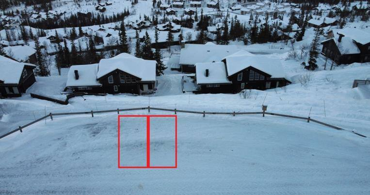
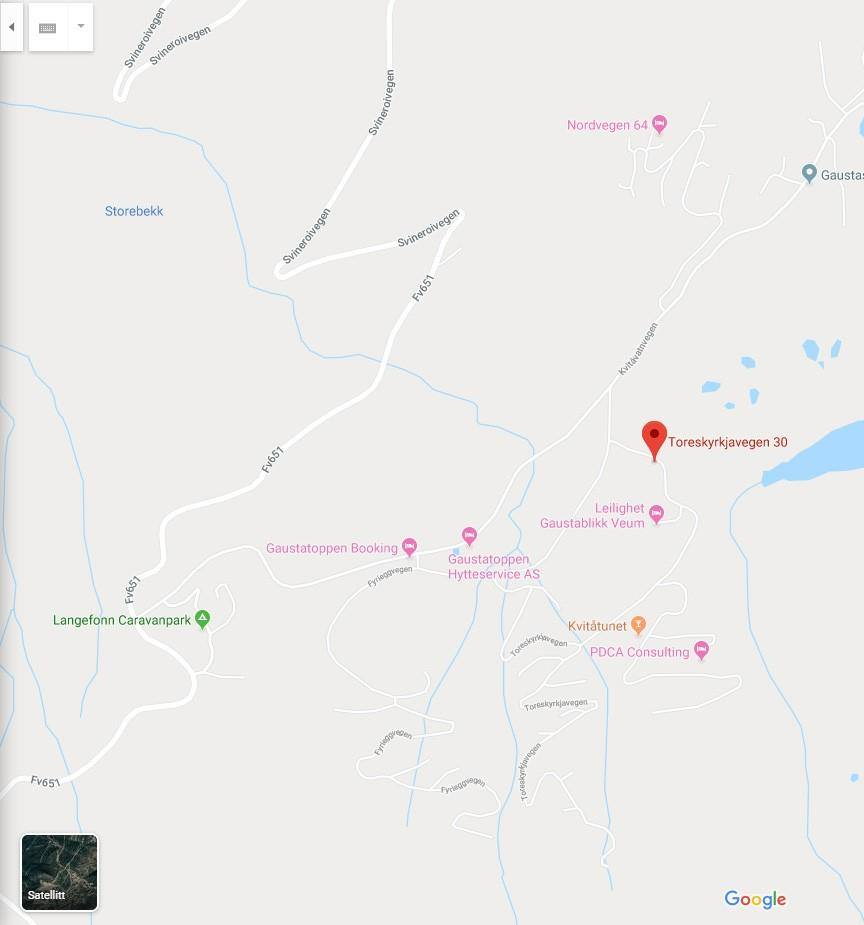
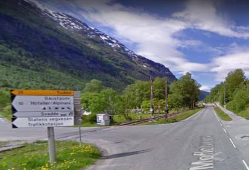
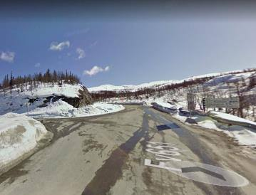
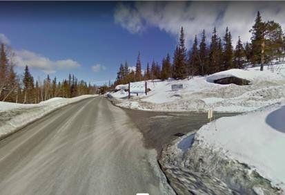

🕓
Innsjekking fra kl. 16:00
Koden til dørlåsen sendes separat før innsjekking.
Parkering
Vi har to parkeringsplasser merket 64. Andre plasser tilhører naboene og skal ikke brukes, selv om de er ledige. Har dere flere biler, må øvrige biler parkeres ved «Bygget» eller på andre tilgjengelige parkeringsplasser.
Når du går ned trappen fra parkeringsplassen ligger tre identiske hytter ved siden av hverandre. Vår hytte er den i midten.





Siste del av kjøreturen
Fra fylkesvei 37 tar du opp FV651 mot Gaustablikk. Følg veien forbi skianlegget, over den lille brua og under den første stolheisen. Ta veien til høyre, kjør omtrent 50 meter, fortsett oppover og ta første vei til venstre etter første tunnel. Følg Hestegrøavegen helt til toppen. Parkeringsplassene er merket med husnummer.